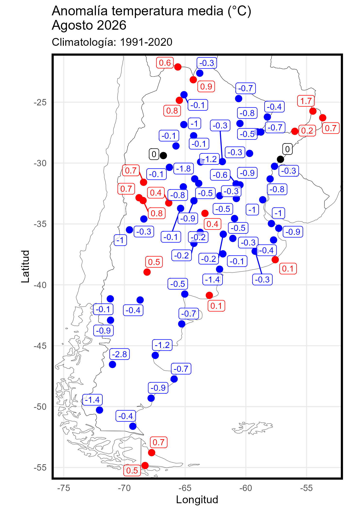

Bienvenidos a seguimiento_temperaturas_argentina

Datos
Nuevos mapas interactivos con más de 250 estaciones!
API con datos en tiempo real
Probá nuestra API accediendo a este link.
Apoye este proyecto con un cafecito:
© 2026 Registro de Temperaturas en Argentina